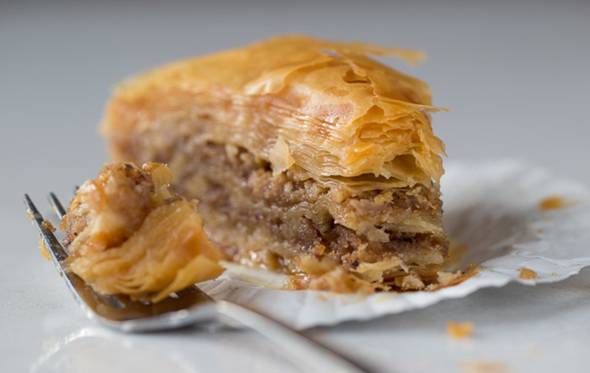

BAKLAVA

Baklava is a symphony of textures and flavors that delight the senses. It's crisp,
goldenlayer of phyllo dough shatter delicately with each bite, giving way, to a
rich, sticky filling of finely chopped walnuts bound together by an amber like
honey.
Ingredients
- 16 oz. of phyllo dough
- 1 pound chopped walnuts nuts
- 1 cup butter, melted
- 1 teaspoon ground cinnamon
- 1 cup water
- 1 cup white sugar
- 1 teaspoon vanilla extract
- 1/2 cup honey
- 1 orange
yields 18 servings
Directions
- Gather all ingredients
- Preheat the oben to 350 degres F(175 degrees C). Butter the bottom and
sides of a 9x13-in pan.
- Chop nuts and toss with cinnamon. Set aside.
- Unroll phyllo dough. Cut whole stack in half to fit pan. Cover phyllo
with a dampened cloth to keep from drying out as you work. Place two
sheets of dough in pan, butter thoroughly with a pastry brush. Repeat
until you have 8 sheets layered.
- Sprinkle 2 to 3 tablespoons of nut mixture on top. Top with two sheets of
dough, melted butter, nuts, layering as you go. The top layer should be
about 6 to 8 sheets deep.
- Using a sharp knife cut into diamond or square shapes all the way to the
bottom of the pan. You may cut into 4 long rows then make diagonal
cuts. Bake for about 50 minutes until baklava is golden and crisp.
- Make sauce while baklava is baking. Boil sugar and water until sugar is
melted. Add vanilla and honey. Simmer for about 20 minutes.
- Remove baklava from the oven and immediately spoon sauce over it.
Let cool.
- Serve in cupcake papers. This freezes well. Leave it uncovered as it gets
soggy if it is wrapped up.
- Enjoy!